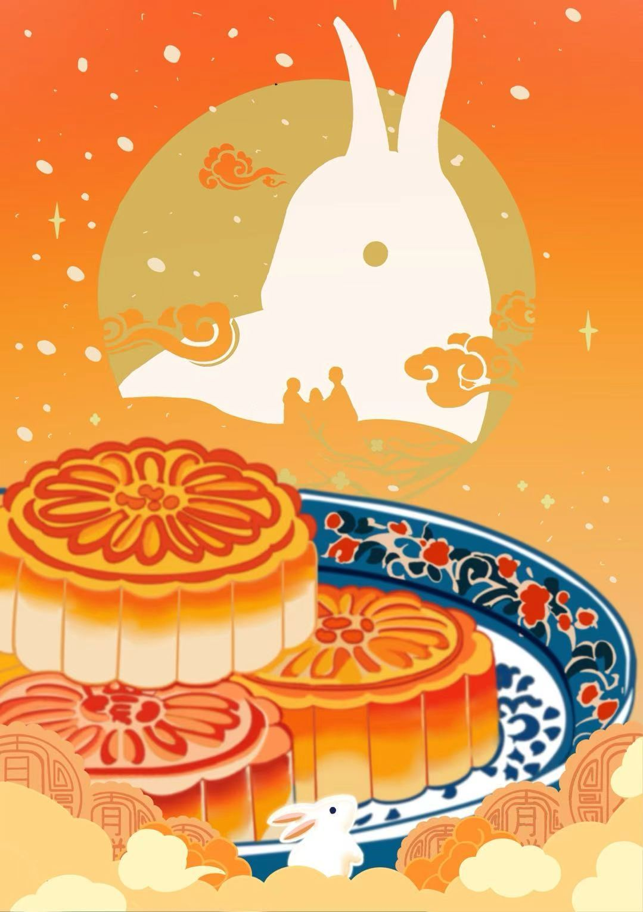

07 — 插画Illustration
插画系列 Illustration Series
两组数字插画：以山西古建与中秋为题，用高饱和的暖色重建记忆中的场景。 Two sets of digital illustration — Shanxi architecture and Mid-Autumn — rebuilding remembered scenes in saturated warm colour.

Year
2025
Role
插画 / 延展Illustration
Client
个人创作
Scope
构图 · 色彩设定 · 纹样与细节 · 成稿Composition · Colour · Ornament · Final Art
01 / 背景Context
最直接表达偏好的部分Where preference shows
插画是视觉设计里最直接表达个人偏好的部分。这两组作品分别来自对家乡建筑的兴趣，和对节日场景的记忆。 Illustration is where personal preference shows most directly in visual design. These two sets come from an interest in the architecture of my home province, and from the memory of a festival scene.
02 / 策略Strategy
暖橙主调 + 平面化色块Warm orange, flattened planes
两组都用暖橙作为主调，以平面化的色块代替渐变塑造体积，再用重复的云纹与水纹建立装饰性秩序。 Both use warm orange as the key, building volume with flat planes instead of gradients, then establishing decorative order through repeated cloud and water motifs.
03 / 执行Execution
先关系，后细节Relationship first, detail second
先铺大色块确定明暗与冷暖关系，再叠加建筑与器物的结构细节，最后统一描边粗细与纹样密度。 Large colour blocks establish the tonal and warm-cool relationships first, then structural detail is layered onto buildings and objects, and finally stroke weight and ornament density are unified.
04 / 成果Outcome
两组成稿Two finished sets
交付《山西古建》与《中秋》两组插画成稿。 Two finished illustration sets — Shanxi Architecture and Mid-Autumn.
品牌色彩Colour System
作品呈现Visuals
